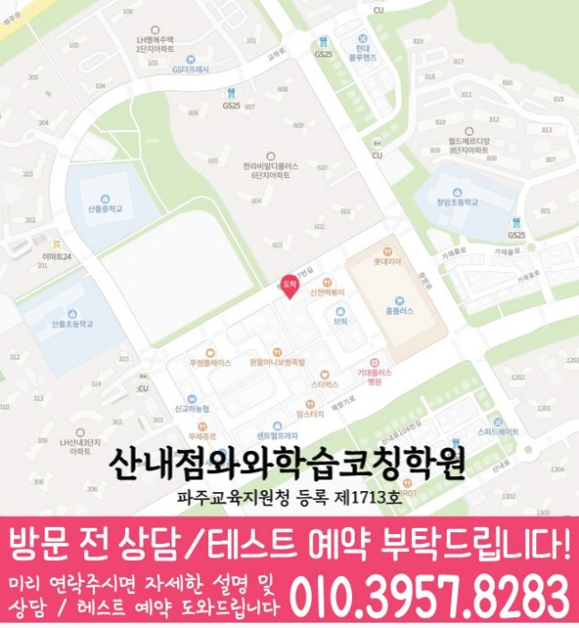

Elementary school Korean · English · Math
산내마을 초등학생 국영수학원
산내마을 초등학생 국영수학원 선택 전 교과 진도와 기초 학습 자료, 최근 오답과 과목별 가능 학년, 센터 위치·비용 확인 기준을 안내합니다.
01 Quick answer
산내마을에서 먼저 확인할 내용
산내마을에서 초등학생 국영수학원을 찾는다면 와와학습코칭센터 산내점의 과목별 가능 학년을 먼저 확인하세요. 학생이 사용하는 학교 자료와 현재 교재를 직접 확인하고, 학생의 실제 풀이 기록에 맞게 과목별로 무엇을 먼저 보완할지 정하는 순서가 필요합니다.
대표 학생 상황
세 과목의 과제 순서와 오답 복습 시점을 스스로 정리하기 어려운 초등학생


010-6839-8283상담 전 핵심 안내
산내마을에서 초등학생을 위한 학원을 찾는다면, 지역 센터는 영어·수학뿐 아니라 국어까지 학습 습관과 개념 이해를 함께 잡아주는 학습 코칭형 프로그램을 운영합니다. 산내마을 과목별 점검에서는 단원별 이해도를 바탕으로 반복 오류를 점검합니다. 산내마을 초등학생에게 필요한 국영수 관리는 진도보다 과목별로 막히는 장면을 확인하는 데서 시작합니다. 산내마을 초등학생 국영수학원 기준에서 먼저 볼 부분은 막연한 설명보다 아이가 오늘 배운 내용을 설명하고 내일 다시 풀 수 있게 만드는 관리 구조입니다.
현재 자료에서 먼저 확인할 학습 신호
산내마을 수업 내용을 점검할 때는 학습 시간 배분을 바탕으로 설명할 수 있는 범위를 확인합니다. 학년과 학교 진도만 보는 것이 아니라 이해도, 풀이 습관, 자주 틀리는 이유를 확인해 학습 순서를 설계합니다.
영어·수학·국어 균형 학습. 영어는 어휘·문장 이해·기초 문법 흐름을, 수학은 개념과 유형을, 국어는 독해 습관과 문제 풀이 전략을 함께 점검합니다.
오답이 실력이 되게. 틀린 문제를 단순 재풀이하지 않고 오답 원인을 유형별로 분류해 다음 문제에서 같은 실수를 줄이도록 지도합니다.
산내마을 초등학생 학습 점검의 목표는 학원 안에서만 문제를 맞히는 것이 아니라 집에서도 아이가 오늘 배운 내용을 꺼내 보는 상태를 만드는 것입니다. 학습 흐름이 불안정한 산내마을 아이에게는 작은 과제를 직접 끝내는 경험이 필요합니다. 이와 같은 학습 부담을 느끼는 경우에는 스스로 공부하라는 말만으로는 부족하므로, 산내마을 초등학생의 국어·영어·수학 학습 점검을 마친 뒤 무엇을 표시하고 무엇을 부모에게 보여 줄지 정해 두어야 합니다. 혼자 공부하게 두기보다 아이가 할 수 있는 부분과 확인이 필요한 부분을 나누는 과정이 중요합니다.
질문과 기록으로 확인하는 학습 과정
설명보다 이해를 먼저. 학생이 어디에서 막히는지 질문과 풀이 과정을 통해 확인하고, 필요한 개념을 정확히 다시 연결해 줍니다.
산내마을 학습 순서를 정할 때는 진단 결과를 바탕으로 상담에서 확인할 기준을 정리합니다. 숙제, 복습, 오답 정리 습관을 점검하며 수업이 끝난 뒤에도 스스로 공부할 수 있게 관리합니다.
성장 피드백 제공. 시험 성적만이 아니라 단원별 약점과 개선 방향을 함께 안내해 학습 동기를 유지합니다.
산내마을 초등학생 학습 점검을 비교하면서 가장 조심할 부분은 결과를 단정하는 문구만 보고 결정하는 일입니다. 산내마을에서 이 학습 단계의 초등학생에게 필요한 것은 몇 달 뒤 성적을 보장한다는 말보다 오늘의 오답, 이번 주의 복습, 다음 달의 단원 계획이 이어지는 구조입니다. 과목별로 비슷한 고민이 있는 아이는 문제를 많이 풀어도 실수가 반복될 수 있으므로, 산내마을의 세 과목 학습 상담에서는 문제량과 설명 방식, 피드백 기록을 함께 질문해야 합니다. 학부모가 비교해야 할 기준은 설명의 양이 아니라 경기도 파주시 산내마을 아이의 생활 시간표 안에서 꾸준히 실행될 수 있는 학습 관리입니다.
산내마을 초등학교 참고 자료를 상담에 활용하는 기준
학생의 현재 자료를 기준으로 보면, 산내마을 초등학교 목록은 제공 자료에서 확인되지 않았습니다. 실제 학습 범위를 확인하면, 실제 학교 자료와 희망 센터의 과목·학년 운영 여부를 함께 확인해야 합니다.
상담 전에 정리해 보면, 학교 목록이 없어도 현재 교재와 과제, 평가 자료를 과목별로 준비하면 산내마을 학생의 보완 순서를 구체적으로 확인할 수 있습니다.
현재 수준에 맞춘 점검 단계
1. 현재 수준 확인. 학년, 학교 진도, 최근 성취 흐름을 바탕으로 부족한 단원과 자주 틀리는 유형을 먼저 확인합니다.
2. 개념 정리와 기초·유형 학습. 문제풀이로 바로 들어가기보다 핵심 개념을 탄탄히 정리한 뒤, 대표 유형부터 단계적으로 확장합니다.
3. 오답 관리와 학습 피드백. 오답을 원인별로 정리하고 다음 학습에 반영해, 같은 실수를 반복하지 않도록 맞춤 피드백을 제공합니다.
4. 복습 루틴 점검. 산내마을 학습 순서를 정할 때는 과제 이행 기록을 바탕으로 보완할 단원을 구분합니다.
산내마을 초등학생의 국어·영어·수학 학습 점검의 수업 설계는 국어 요약, 영어 듣기, 수학 서술형 영역을 각각 따로 보되 서로 영향을 주는 부분까지 연결해야 합니다. 경기도 파주시 산내마을에서 비슷한 학년대의 초등학생이 국어에서 근거 찾기를 놓치면 영어 지문의 질문 의도도 흐려질 수 있고, 수학 문장제에서도 조건을 빠뜨릴 가능성이 커집니다. 영어는 암기한 단어 수와 함께 읽기 지문에서 뜻을 다시 꺼내는 힘을 확인해야 합니다. 수학은 계산량보다 개념을 말로 설명하고 풀이 순서를 남기는 연습이 중요하므로, 산내마을 초등 국영수 상담에서는 과목별 진도와 복습 기록을 함께 비교해 보는 것이 좋습니다.
다음 학습 단계로 이어지는 확인 기준
초등 저학년(1~3학년). 수학 기초 연산과 개념 이해, 영어 기초 어휘·문장 감각을 안정적으로 잡습니다. 국어는 독해 습관과 핵심 내용 찾기부터 차근차근 연습합니다.
초등 고학년(4~6학년). 산내마을 수업 내용을 점검할 때는 복습 이력을 바탕으로 다음 학습 계획을 조정합니다. 영어는 문법의 기초 구조와 독해 흐름을 연결하고, 국어는 문제 해결 전략을 강화합니다.
학습 변화·교과 평가 대비. 시험 범위와 제공된 시험지의 문항 유형을 반영해 복습 계획을 조정하고 실수 유형을 우선 점검합니다. 오답 노트 기반으로 약한 단원을 반복 보완해 학습 변화를 목표로 합니다.
학습 습관 만들기. 숙제·복습·오답 정리 루틴을 학습 코칭으로 정착시키며 꾸준함을 만들어 드립니다. 집에서 혼자 공부할 때 막히는 지점을 함께 점검해 학습 지속력을 강화합니다.
산내마을 초등학생학원 지역 센터는 학생의 현재 상태를 기준으로 필요한 학습을 정리하고, 영어·수학·국어 학습 방향을 상담을 통해 자세히 정리합니다. 산내마을 복습 계획에서는 복습 이력을 바탕으로 복습 시점을 정합니다.
산내마을 상담에서는 학교 일정 점검을 학생 자료로 확인하고 과목별 계획에 어떻게 반영할지 질문하세요. 산내마을 아이는 세 과목 수업을 마친 뒤 이해한 내용, 다시 풀 문제와 다음 질문을 구분해 남기는 편이 좋습니다. 산내마을 국어·영어·수학 학습 계획에서 학습 관리는 수업 출석만 확인하는 일이 아니라, 아이가 배운 내용을 어떤 문제에서 사용했고 어느 부분을 다시 봐야 하는지 남기는 과정입니다. 초등학생에게는 많은 숙제보다 오답을 짧게 반복하고 질문을 남기는 흐름이 도움이 됩니다.
02 Consultation examples
산내마을 학부모 상담 상황 예시
아래 내용은 실제 고객 후기나 성적 결과가 아니라, 상담에서 확인할 질문을 이해하기 위한 상황 예시입니다.
산내마을 학부모가 자녀의 세 과목 학습량이 서로 충돌하는 문제를 질문한 상황을 예로 들었습니다. 상담 후에는 성적 약속보다 과목별 최소 복습량, 집중 단원과 재확인 날짜가 구체적인지 살펴봅니다.
산내마을에서 제공된 초등학교 목록이 없어 학생의 실제 교과 진도·알림장·단원평가 자료를 직접 준비해 질문하는 학부모 상황을 가정했습니다. 상담 내용을 들은 뒤 국어·영어·수학의 피드백 방식이 각각 무엇인지와 가정에서 확인할 기록을 구분합니다.
03 FAQ
산내마을 초등학생 국영수학원 자주 묻는 질문
학부모님이 상담 전에 자주 확인하는 내용을 질문과 답변으로 정리했습니다.
산내마을 초등학생 국영수학원 선택 전 학생의 어떤 습관을 살펴야 하나요?
숙제를 시작하는 시각과 끝내는 기준을 스스로 정하기 어렵다면 과제량을 늘리기 전에 짧은 시작·완료 기록과 복습 주기를 살펴보는 편이 좋습니다.
산내마을 국영수 학습에서 과목별 병목을 어떻게 나누나요?
산내마을 상담에서는 한 과목의 과제가 다른 과목 복습을 밀어내지 않도록 최소 유지량과 집중 과목을 구분합니다. 국어·영어·수학의 오답 원인이 다르므로 재학습 방법과 확인 날짜도 과목별로 정해야 합니다. 초등 교과에서는 읽기·어휘·계산 기초와 스스로 공부를 시작하는 습관을 함께 살핍니다.
산내마을에 학교명이 따로 표시되지 않으면 상담은 어떻게 준비하나요?
제공 자료에서 산내마을 초등학교 목록을 확인할 수 없어 특정 학교를 추정하지 않습니다. 현재 교과 진도·알림장·단원평가 자료와 센터의 가능 학년을 상담에서 함께 확인하세요. 상담에는 알림장과 단원평가처럼 학생이 실제 사용하는 교과 자료를 준비하는 편이 좋습니다.
산내마을 센터에 문의할 때 주소와 가능 학년을 함께 물어봐야 하나요?
산내마을 센터 자료에서 주소와 교습비를 확인한 뒤, 초등학생 가능 과목·시간표·보강 여부를 등록 전에 다시 질문하세요. 실제 방문 위치는 위 센터 확인 정보에서 확인할 수 있습니다.
04 Continue
산내마을 페이지 이동
카테고리 전체 지역 또는 앞뒤 지역 안내로 이동할 수 있습니다.